Cross-Validation Results: Automatic Report and Interpretation
Metrics by Fold
| Fold |
R2 |
MSE |
RMSE |
MAE |
| 1 |
-0.337934 |
411.100600 |
20.275616 |
16.897143 |
| 2 |
0.173811 |
95.746083 |
9.784993 |
8.125000 |
| 3 |
-9.927344 |
239.187417 |
15.465685 |
13.508333 |
| 4 |
-0.352548 |
239.288333 |
15.468947 |
12.200000 |
| 5 |
-0.219257 |
370.417033 |
19.246221 |
18.043333 |
Feature Importance (mean ± std)
| feature |
mean_importance |
std_importance |
| TL |
0.262098 |
0.026331 |
| OR |
0.142937 |
0.060029 |
| TR |
0.101463 |
0.033391 |
| PR |
0.101388 |
0.029776 |
| PL |
0.080754 |
0.027648 |
| FL |
0.076443 |
0.012032 |
| FR |
0.065312 |
0.017970 |
| OL |
0.058995 |
0.025835 |
| CL |
0.056047 |
0.014707 |
| CR |
0.054564 |
0.016052 |
Main Plots
feature_importances_mean_std.png
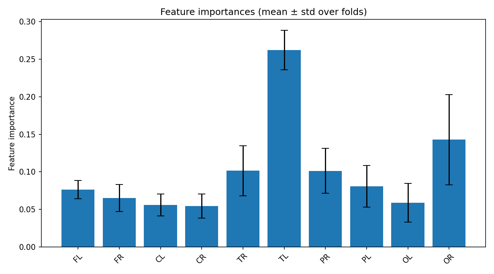
feature_importances_correlation_heatmap.png
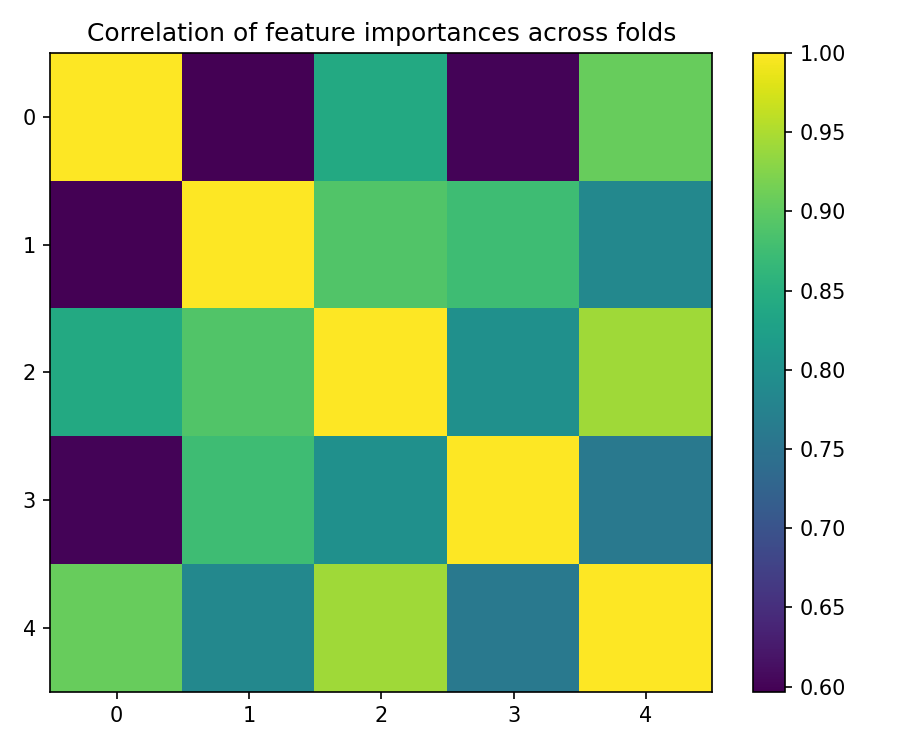
best_fold_2_feature_importances.png
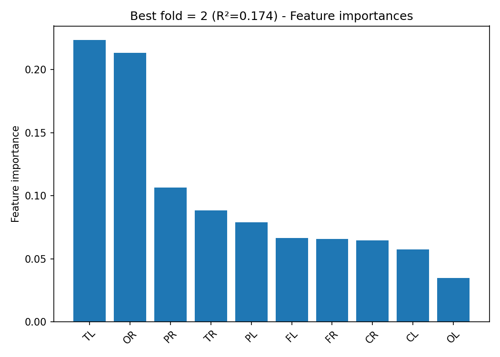
True vs Predicted Scatter Plots (by fold)
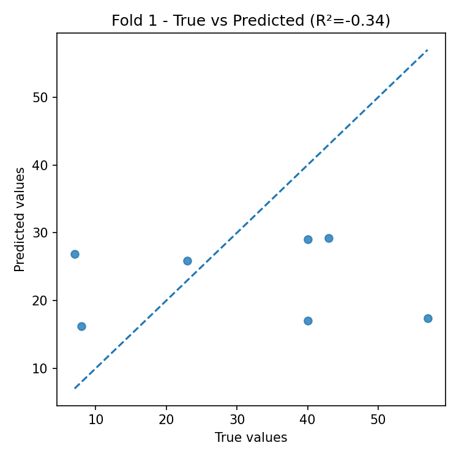
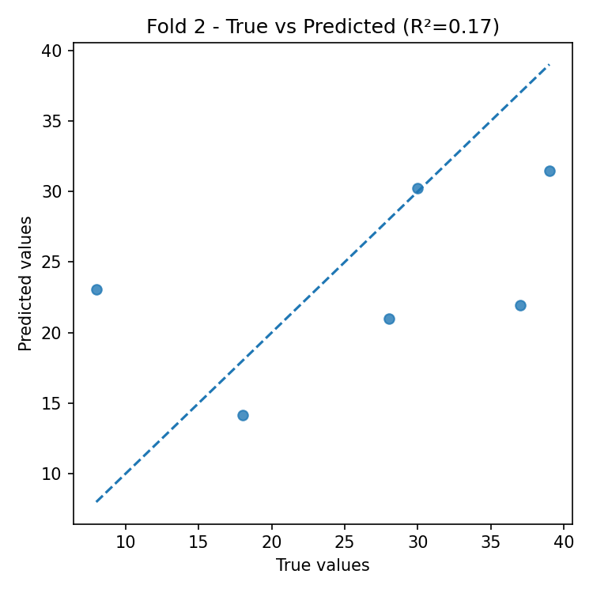
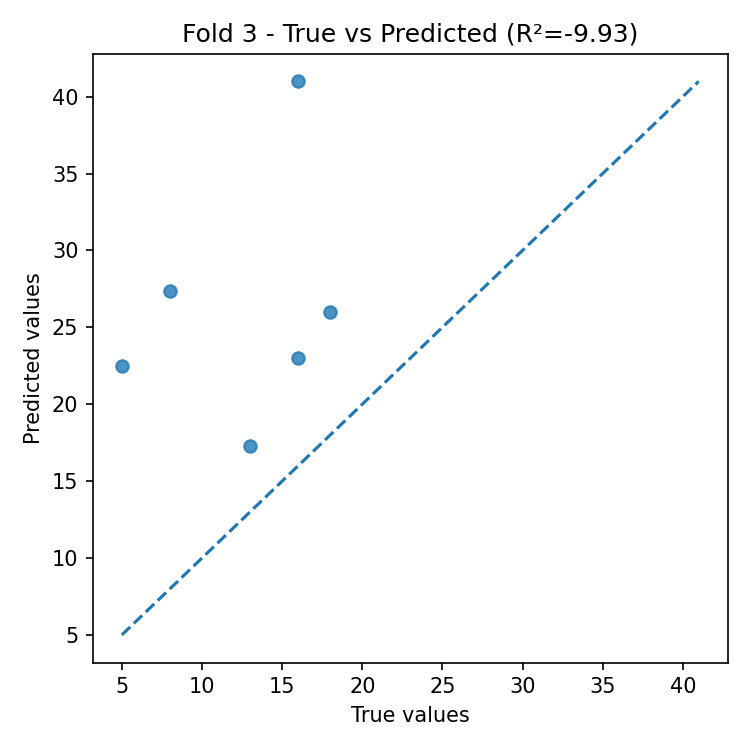
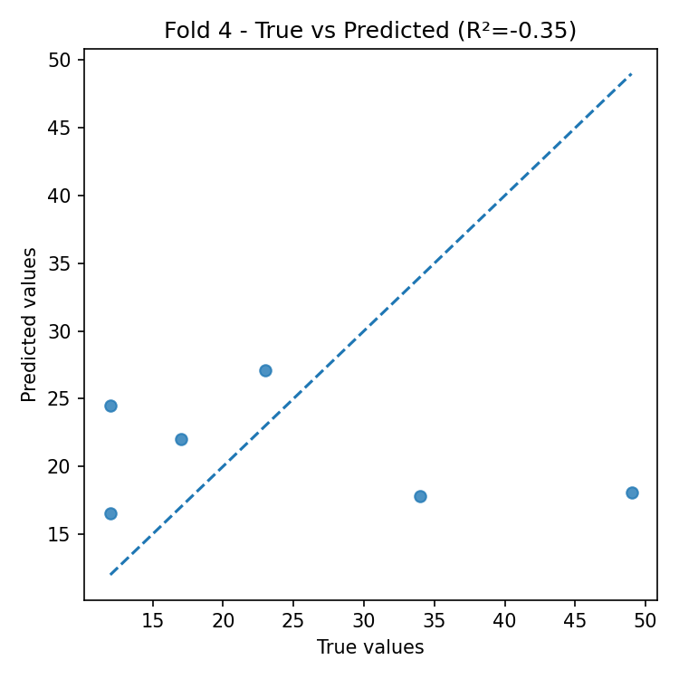
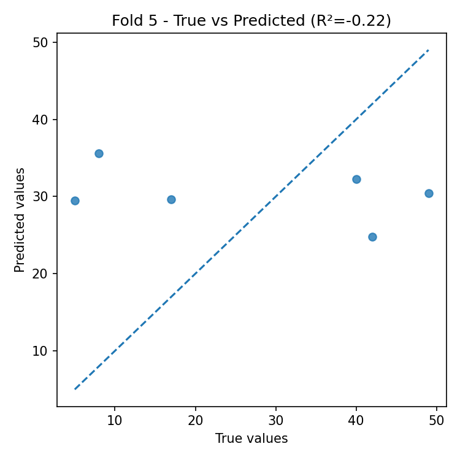
Residual Plots (by fold)
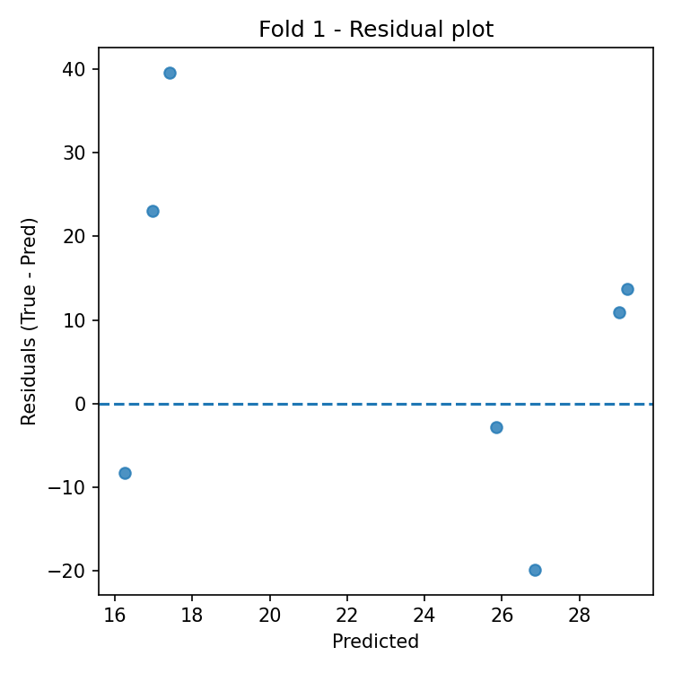
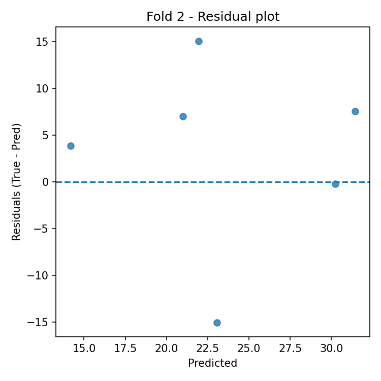
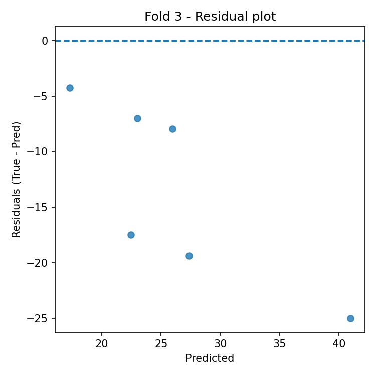
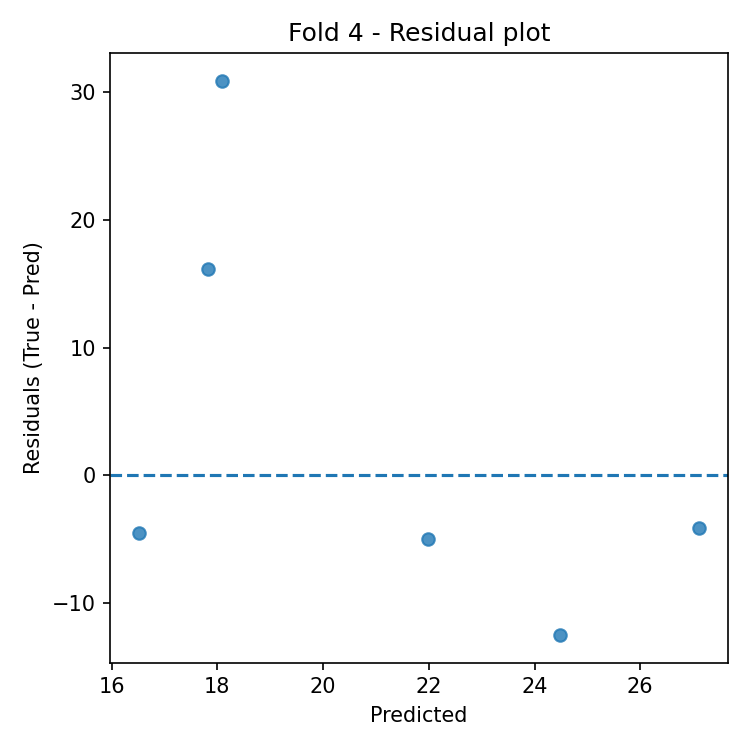
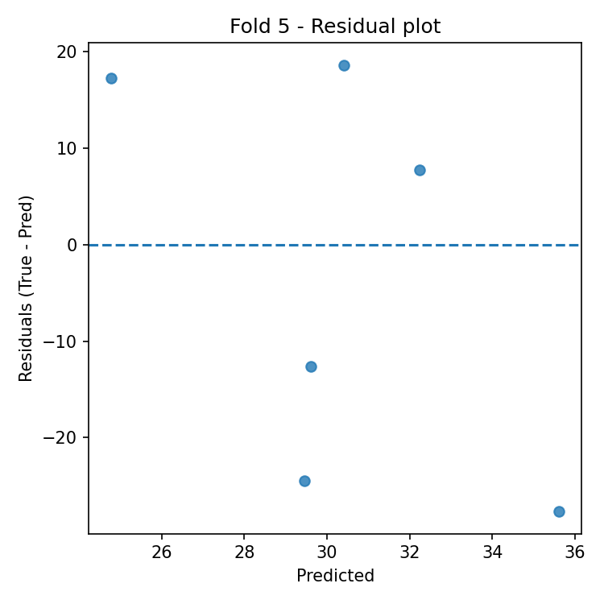
Automatic Interpretation
Overall Performance
- Mean R² across folds: -2.133 (± 4.363).
- Average error: RMSE = 16.048, MAE = 13.755 (same unit as target variable).
Model Stability
- R² variability across folds is high (std = 4.363).
- Average feature importance stability across folds: 0.026 (lower = more stable).
Most Important Features (average across all folds)
- Top-3: TL (0.262), OR (0.143), TR (0.101).
Best Fold
- Best fold: 2 with R² = 0.174.
- In the best fold, the most important features are: TL (0.223), OR (0.213), PR (0.106).
Residual Analysis (best fold)
- Residuals–predictions correlation: -0.044 (0 ≈ absence of linear bias).
- |Residuals|–predictions correlation: -0.150 (positive values indicate possible heteroscedasticity).
- Outliers (|res| > 3·std): 0.